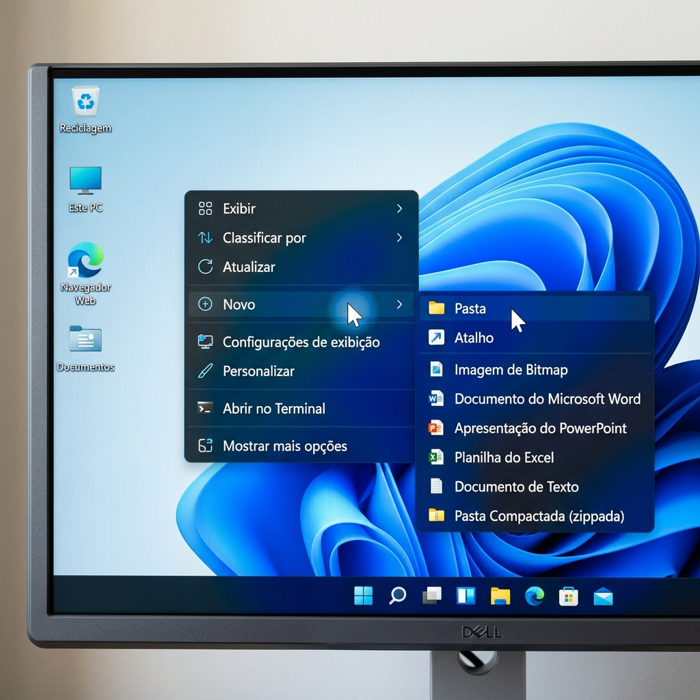
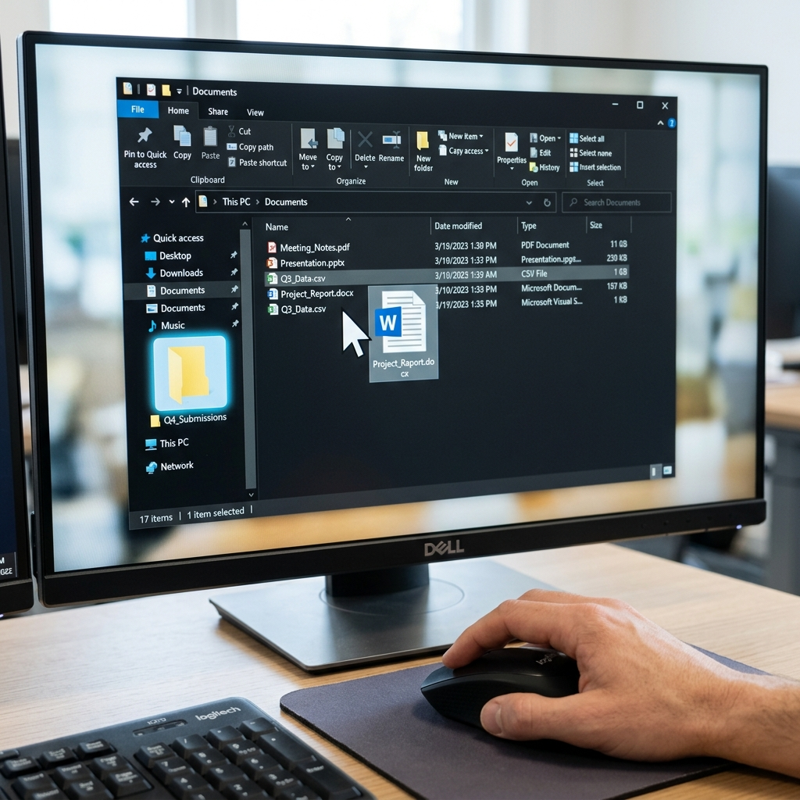

O Segredo Principal: Pastas Virtuais = Pastas Físicas
Imagine o seu computador como um grande armário de escritório. Se você jogar todos os papéis e fotos soltos lá dentro (na sua Área de Trabalho), quando precisar achar a conta de luz do mês passado, vai ser um pesadelo, certo? As Pastas existem justamente para agrupar esses arquivos (papéis) por assunto, como num arquivo de metal da vida real. O computador até desenha elas amarelinhas, imitando aquelas pastas de papelão!
Passo a Passo: Como criar sua primeira pasta
O processo de criar uma pasta é exatamente igual em qualquer computador com Windows. Se você já dominou o uso do botão direito do mouse no nosso guia anterior, isso vai ser moleza!
1. Encontre um espaço vazio
Na sua Área de Trabalho (aquela tela inicial cheia de atalhos), procure um pedaço da imagem de fundo onde não tenha nenhum ícone ou programa. O mouse precisa estar sobre o "vazio".
2. O Clique Mágico (Botão Direito)
Dê um clique com o botão direito do mouse. Lembre-se, o botão direito abre o menu de opções do computador. Uma pequena lista cinza vai aparecer.
3. Escolha "Novo" e depois "Pasta"
Mova a setinha (sem clicar) até a palavra Novo nessa lista. Um segundo menu aparecerá ao lado. Agora sim, leve a setinha até a palavra Pasta (tem um desenho de uma pastinha amarela) e clique com o botão esquerdo (o botão de confirmar!).

4. Dê um nome para sua gaveta
Imediatamente, uma pasta amarela aparecerá na tela, e o nome dela (geralmente "Nova pasta") estará azul, piscando. Isso significa que o computador está dizendo: "Pode digitar o nome!". Digite no teclado, por exemplo: Contas 2026. Para finalizar e gravar o nome, basta apertar a tecla Enter.
Como colocar um arquivo (ou foto) dentro da pasta?
Você criou a pasta, mas ela está vazia. Para guardar algo lá dentro, o jeito mais fácil é o famoso movimento de "Arrastar e Soltar".
- Coloque a setinha do mouse bem em cima do arquivo (uma foto, por exemplo) que está solto na tela.
- Aperte o botão esquerdo do mouse e SEGURE. Não solte o botão!
- Continue segurando o botão e mova o mouse em direção à pasta amarela. Você verá a foto sendo "arrastada" junto com a setinha.
- Quando a setinha estiver exatamente em cima da pasta amarela (ela pode ficar um pouquinho mais escura), solte o botão do mouse.

Pronto! Como num passe de mágica, o arquivo sumiu da tela e pulou para dentro da pasta. Para ver o arquivo novamente, basta dar dois cliques rápidos (duplo clique) na pasta amarela para abri-la.
Dica de Ouro: Pastas dentro de Pastas
Assim como você coloca um envelope dentro de uma pasta de papelão, você pode criar uma pasta digital dentro de outra! Por exemplo: Você pode ter uma pasta chamada "Fotos de Família" e, abrindo ela, criar duas novas pastas lá dentro: "Aniversário do Joãozinho" e "Natal". Isso deixa sua organização perfeita.
O que fazer se der errado? (Erros Comuns)
Erro 1: Arrastei o arquivo, mas não sei para onde ele foi!
Solução: Se você soltar o botão do mouse no meio do caminho ou em cima do ícone errado, o arquivo pode cair na pasta vizinha. Não entre em pânico! Para desfazer a última ação imediatamente, aperte e segure a tecla Ctrl e dê um toque na tecla Z. O arquivo voltará para o lugar original na mesma hora.
Erro 2: Errei o nome da pasta na hora de criar. Tem como mudar?
Solução: Sim! É muito fácil. Clique uma única vez com o botão direito em cima da pasta. Na lista que abrir, clique em Renomear. O nome ficará azul novamente. Digite o nome certo e aperte Enter.
Checklist Rápido: Você aprendeu?
- Entendi que as pastas servem para agrupar arquivos e organizar a "bagunça".
- Sei que devo clicar com o Botão Direito no espaço vazio para encontrar a opção "Novo".
- Sei que devo apertar o Enter para confirmar o nome da pasta.
- Sei arrastar e soltar um arquivo para guardá-lo dentro da pasta.
Seu Próximo Desafio
Organizar o computador é libertador! Mas e se você perdeu a senha do seu e-mail no meio dessa bagunça toda? O nosso próximo guia é o salva-vidas que você precisa: Como recuperar a senha do Gmail esquecida?